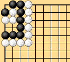
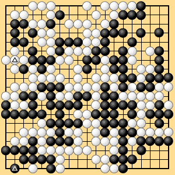

| 2.3.5 Thousand-Year Ko |
|---|
| Dia. 2-13-1 is the basic thousand-year ko shape, which often appears in ordinary play. Thousand-year ko attracted attention as a rules problem when it appeared in the second round of the Nihon Kiin's autumn ranking tournament (Oteai) in 1928, in a two-stone game between Segoe (then 7 dan) and Takahashi (then 3 dan). Dia. 2-13-2 shows the final position in that game. Segoe (white) was ahead, so he regarded the position as a type of seki, but Takahashi's idea was that as long as the fate of this position remained unresolved, the outcome of the game was not settled. They proceeded to fill the neutral points, each reading the other's thoughts, until the neutral points were all gone. Segoe now passed, claiming that there was nowhere to play. Takahashi refused to allow this, claiming that to move was an obligation, not a right. A major problem had arisen. |
|  |
| Dia. 2-13-1 |
|---|
|  |
| Dia. 2-13-2 |
|
There were no written rules at that time, so naturally differing views were advanced. Since nobody's views or claims were clearly supported by any rules, and since there was no historical precedent or custom, there was no prospect of reaching a definitive conclusion. The significance of this game was that it started a movement for a written formulation of the Japanese rules. The question was not just whether alternate play was a right or a duty, or how to settle the problem in the diagram. Basic issues had been raised about the rules. A thousand-year ko is usually settled during the game. The above problem arises if the ko is left until the game reaches a state in which both sides have only small ko threats. |